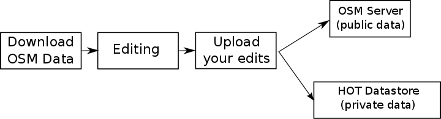
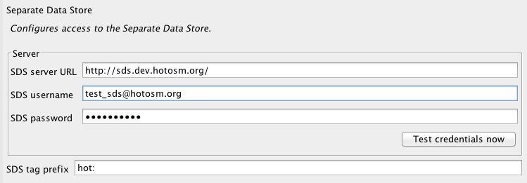
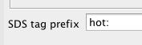
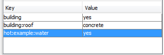
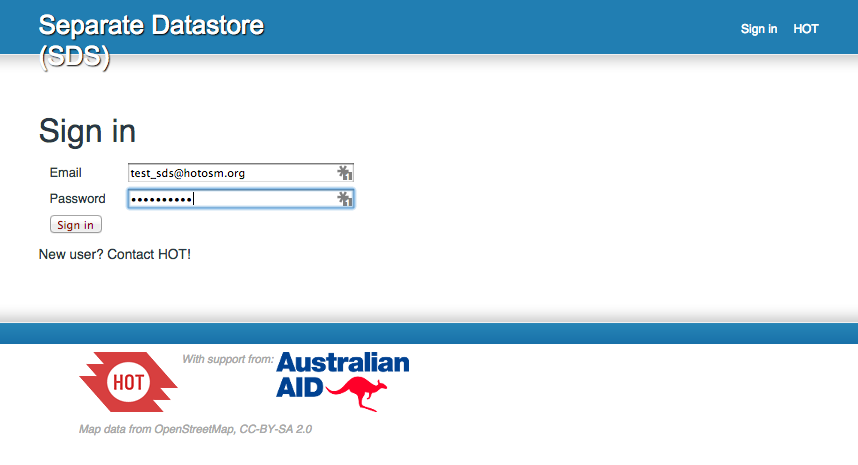
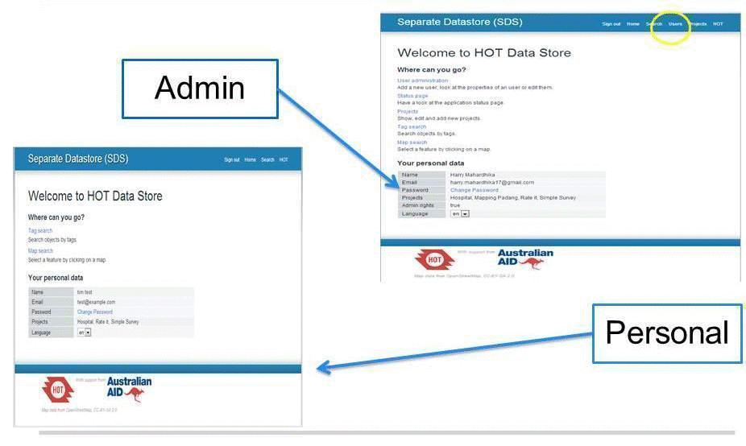
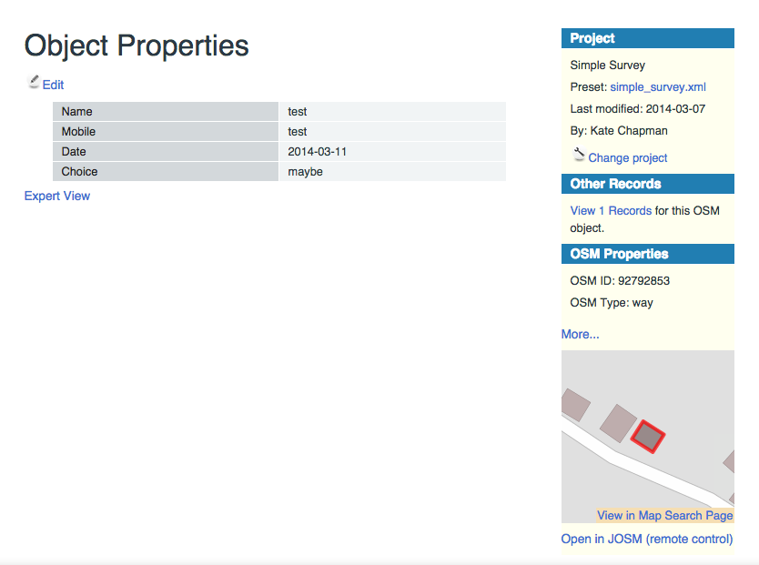

Module 5: Using the Separate Data Store¶
Learning Objectives
Understand the functions of the Separate Data Store (SDS)
Understand what data should be kept publicly and what should be private
Install SDS plugin in JOSM
Use SDS presets
Use SDS plugin for selecting public and private data
Access online datastore
OpenStreetMap data is open and available to anyone who would like to access it. However, there may be times when you want to use OSM to collect data, but you would like to keep some attributes stored in a private database. For this purpose, HOT has developed a tool for JOSM known as the Separate Data Store. The SDS allows you to create maps and add data into JOSM the same as always, but when you upload your edits, public data is saved to the OSM database and private data is saved separately to your private data server.
This module is designed for people who desire to store private geospatial information, such as household income, personal health care data or the location of gold mines.
For liability reasons, HOT does not provide the SDS service itself, but the software is available for installation on a private server. In this module we will utilise the SDS development server to demonstrate its functionality.
If you are interested to set up your own SDS server, please contact us (team.id[at]hotosm.org).
1. Installing the SDS plugin¶
This plug-in allows private data to be diverted into the private data store, rather than being saved in the OSM database. A recent version of JOSM is required for the SDS plugin to run. (If you do not have a recent version of JOSM, download and install it from http://josm.openstreetmap.de/.).
Open the preferences menu in JOSM and go to the plugins tab.
Click Download List to ensure that all available plugins are listed.
In the search box, type sds.
Check the box next to the plugin to activate it. Click OK to download and install. You will need to restart JOSM.
2. Using the plugin¶
Editing the map works just the same as before. The only difference is that when you upload changes, some tags will be automatically saved on the private datastore, and the rest will be saved directly onto OSM.
After installing the plugin, you need to edit the settings so that private data is directed to the correct SDS server. In this module we will use a demo version of the SDS, but you may also configure the plugin to save private data on your custom SDS server.
Go to .
Edit the SDS server URL so that it points to http://sds.dev.hotosm.org/.
We will use a sample account to try out the SDS. Enter the following for the username and password:

SDS username: test_sds@hotosm.org
SDS password: CyYi3VeuHk
Click Test credentials now. If it is set up correctly, you should receive a message which tells you the connection is successful.
3. How it works¶
How does the plugin know which data you want to store on OSM and which data you want to store publicly? Quite simply, it knows because of the tags. Normal tags go to OSM as always, but you can use tags with a special prefix that will be sent to the private datastore.
By default, any tag that has the prefix hot: will go to the private datastore. This can be changed in the SDS preferences menu:
When you create or edit an object on the map, you can apply tags like this:
In this case, the first two tags will be saved on OSM. The third tag, because it has the prefix hot:, will be saved on the private datastore.
You will most likely collaborate with others when using a private datastore, so you will have a standard list of tags to use for the specific data you are collecting. These tags can then be made into a presets menu, which will provide an easy-to-use form for adding both public and private data.
4. Accessing the datastore online¶
You can access the SDS online with your username and password. To visit the example SDS, open your browser and go to http://sds.dev.hotosm.org/.
There are two types of SDS users. Admin users can add new projects or users onto the SDS. Personal users are regular users who are part of a project team which is using the SDS.
Our sample account is a personal account, not an admin, but we can see the online platform where our private data is kept.
Let’s see what the private data looks like online.
Click on Tag search.
In the text box, type hot and click search.
You should see at least one search result. Click on the eyeball button next to it to see complete information.
We can see all the information about this object, both the public attributes from OSM and the private attributes kept in the SDS.
Click on Expert View to see the actual tags that are used with this object. Look at OSM Properties to see the tags that are saved publicly on OSM.
5. Common questions¶
How do we save our data?¶
The steps are exactly the same as uploading changes to OSM. The only difference is that tags with the prefix you select (such as hot:) will be diverted to a private datastore.
How many users can use the same account? How can we add users?¶
There is no limit for user accounts. When you set up your own SDS, you will have an Admin account and can add as many users as you need.
How much data can we save in our private server?¶
A lot! Basically this depends on the size of your server.
Is there an easy way to search the private data?¶
After you sign in to the SDS website you are able to perform a tag search, as we have done in this module.